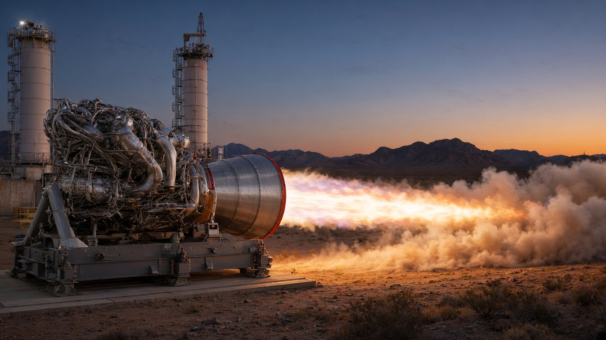

BREAKING: Blue Origin says the redesigned BE-4 main oxygen valve has passed qualification
Blue Origin said the modified BE-4 main oxygen valve at the center of May's New Glenn explosion has completed qualification testing, is already in engines for upcoming flights, and is rolling out fleetwide. The anomaly investigation is expected to close later this month; return to flight remains January 2027.

Blue Origin said Tuesday that the redesigned BE-4 main oxygen valve at the center of May’s New Glenn explosion has successfully completed qualification testing. In a Nov. 10 update on its GS1-3 investigation page, the company said the modified valve “retains the existing valve architecture while incorporating targeted design improvements.” The hardware is already installed in engines slated for upcoming flights and is being rolled out across the rest of the fleet. Blue Origin expects to close the anomaly investigation later this month.
The finding is the first concrete hardware milestone since the company slipped New Glenn’s return to flight to January 2027. The May 28 GS1-3 hotfire anomaly destroyed a New Glenn vehicle on the pad and badly damaged Launch Complex 36 at Cape Canaveral. On Aug. 5, Blue Origin said the failure originated at the main oxygen valve on one of the BE-4 engines, a conclusion later confirmed by hardware recovery and inspections. It described the fix as small modifications that could be retrofitted to existing engines.
The January target, reported by CNBC from a Nov. 5 memo by CEO Dave Limp, slipped from an earlier goal of flying again before the end of this year. Limp attributed the delay to pad reconstruction, including weather-related setbacks over the summer.
Why it matters: New Glenn is the path to orbit for Blue Origin’s Blue Moon lander, whose Artemis III docking tests are planned for 2027, and for the PROMISE nuclear rover delivery targeted in 2028. BE-4 also powers ULA’s Vulcan, so a fleetwide valve change reaches national-security launch as well as Blue Origin’s own manifest. Qualification of the redesigned valve is a necessary step, but the investigation is not yet closed and the rocket still has to get off a rebuilt pad.
Sources: Blue Origin: GS1-3 Hotfire Updates (Nov. 10, Aug. 5 and May 28 entries); CNBC: Blue Origin pushes launch to January 2027 as it races to rebuild damaged launchpad (Nov. 5)
Sources
-
Blue Origin
GS1-3 Hotfire Updates
-
CNBC
Blue Origin pushes launch to January 2027 as it races to rebuild damaged launchpad